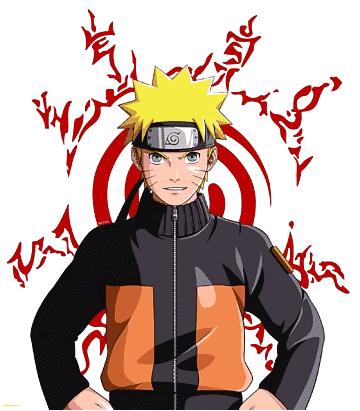
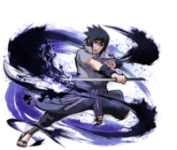
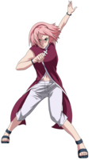
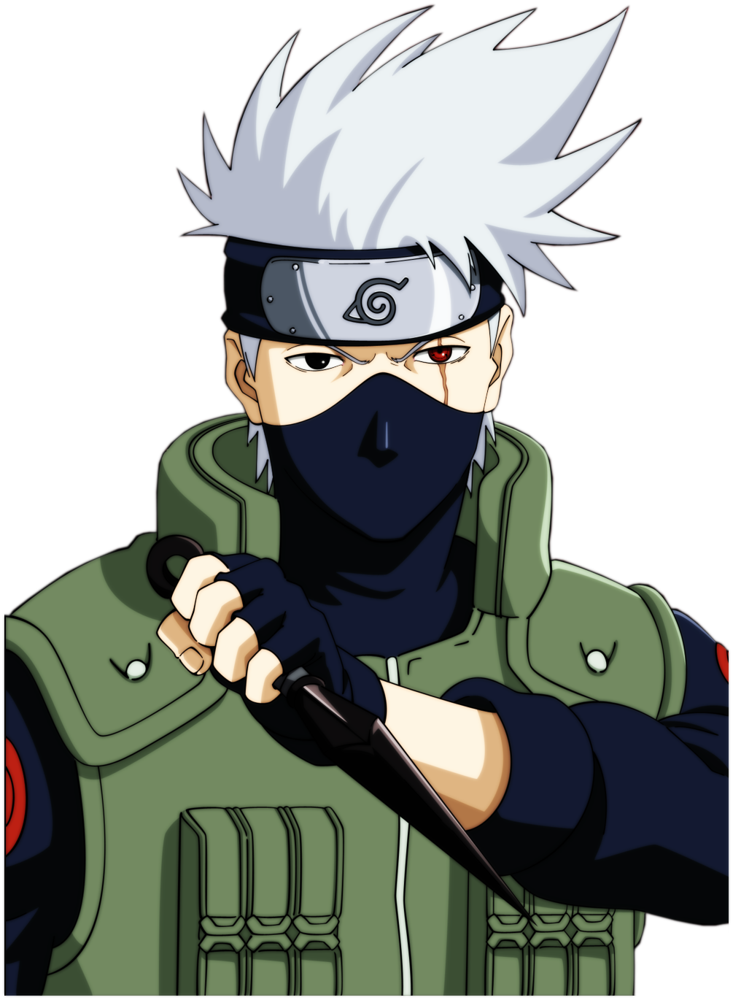
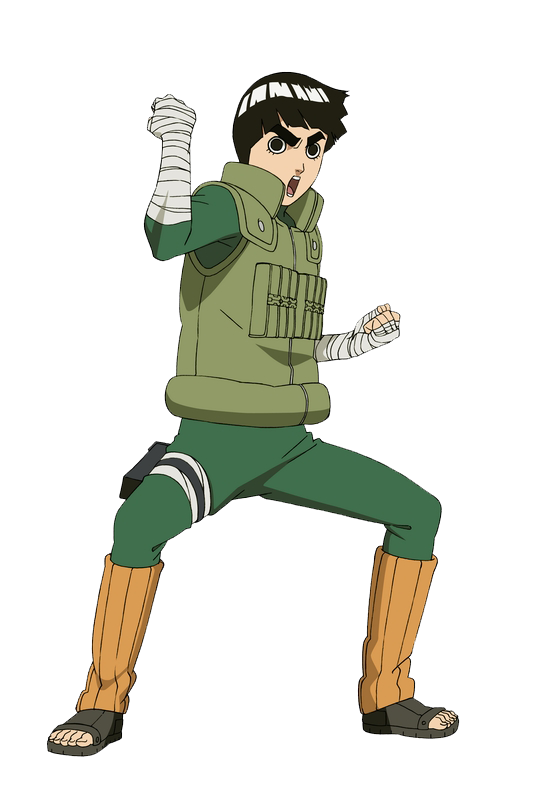
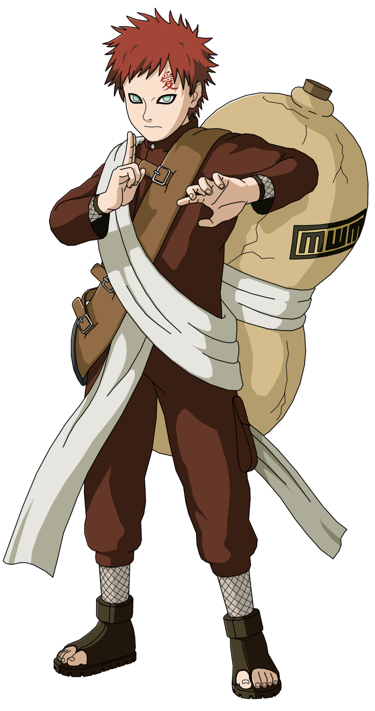
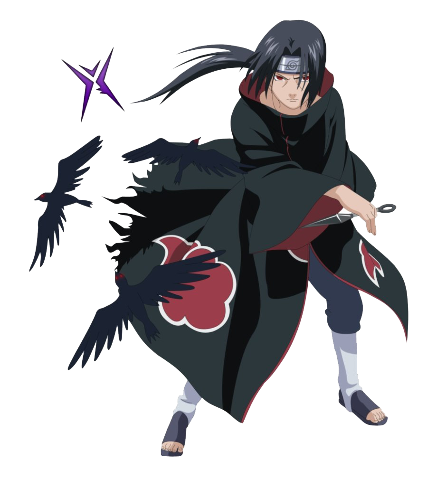
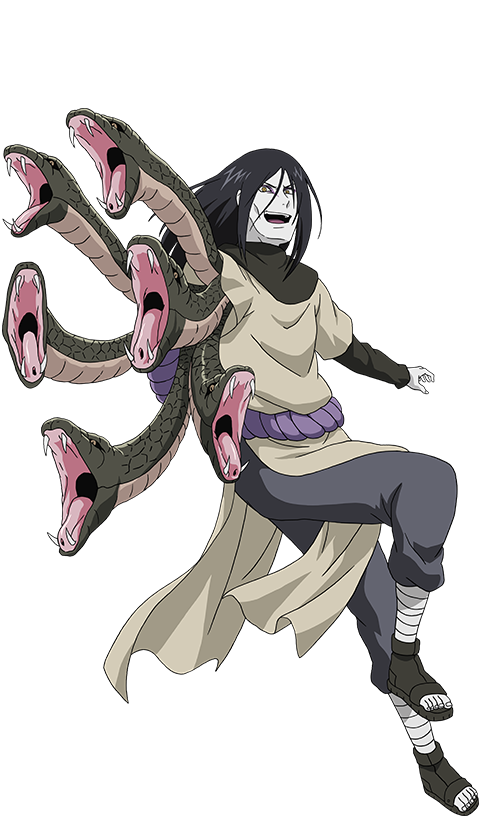
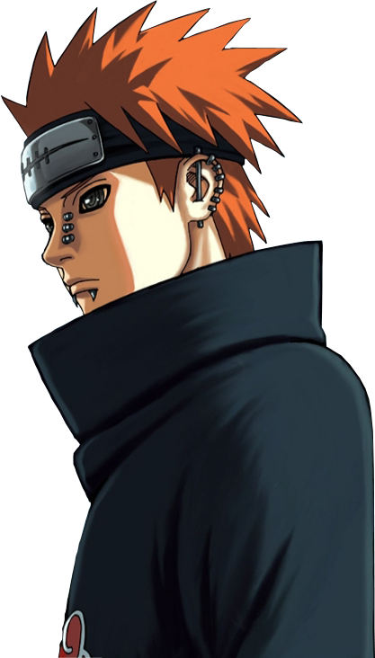

Naruto é um jovem ninja da Vila da Folha que sonha em se tornar Hokage. Tem dentro de si a Raposa de Nove Caudas e supera muitas dificuldades.

Sobrevivente do clã Uchiha, busca vingança contra o irmão Itachi. Seu caminho o afasta de seus amigos.

Ninja médica com grande controle de chakra, forte e inteligente. Cresce muito ao longo da série sob a tutela de Tsunade.

Líder do Time 7, conhecido como Ninja Copiador. Possui Sharingan e grande habilidade estratégica.

Não pode usar ninjutsu ou genjutsu, mas compensa com taijutsu e disciplina incríveis.

Ninja da Areia com uma besta dentro de si; aprende sobre amizade depois de enfrentar Naruto.

Irmão de Sasuke que exterminou o clã Uchiha. Personagem complexo com motivações profundas.

Sannin lendário que busca conhecimento e poder a qualquer custo.

Líder da Akatsuki com visão filosófica sobre dor e sofrimento.